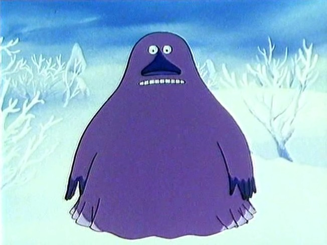

Muumilaakson tarinoiden Mörkö on yleisen käsityksen ja tutkimustenkin mukaan yksi suomalaisia lapsia eniten pelottaneista televisiohahmoista. Mörkö (ruots. Mårran) on Tove Janssonin luomassa Muumi-maailmassa esiintyvä hahmo. Mörkö on hyytävän kylmä olento, joka jäädyttää kaiken, mihin koskee. Mörkö on naispuolinen; tämä ilmenee esimerkiksi siitä, että siihen ruotsin kielessä viitataan feminiinisellä kolmannen persoonan pronominilla hon. Mörkö kuvataan vaarallisena hirviönä, mutta myöhemmissä teoksissa se on esitetty pikemminkin yksinäisyydestä kärsivänä. Valo ja tuli houkuttavat Mörköä puoleensa, sillä hän etsii lämmikettä ikuiseen kylmyyteensä. Mörön viimeisessä esiintymisessä kirjoissa, Muumipapassa ja meressä, Mörkö ei enää lopussa ole kylmä, koska Muumipeikko saa hänet lämpimäksi. Mörkö on hyväntahtoinen ja yksinäinen kulkija, joka kaipaa ystävää. Mörköä voidaan siis pitää erittäin väärinymmärrettynä hahmona, jonka pelottavan ulkomuodon ja nimen takaa löytyy yksinäinen, kylmissään oleva ystävätön sielu.

Mörön jokainen esiintyminen Muumilaakson tarinoissa